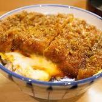

② 카츠동 (Katsudon)

재료 (1인분)
- 돼지고기 등심 1장
- 계란 2개
- 양파 1/2개
- 간장 2큰술, 맛술 2큰술, 설탕 1큰술, 물 100ml
- 밥 1공기, 밀가루, 빵가루, 식용유
조리 방법
-
돈가스 만들기: 등심에 간 후
밀가루-계란-빵가루 입혀 튀기기
-
양념 국물: 양파 + 양념 넣고 끓이기 →
돈가스 넣기
-
계란 입히기: 풀어놓은 계란을 팬에
뿌리고 뚜껑 덮기
-
완성: 밥 위에 얹고 고명으로 마무리
Tip: 계란은 완숙보다 반숙으로 남기면 더 촉촉하고
부드럽습니다.